import yfinance as yf
import matplotlib.pyplot as plt
import pandas as pd
import numpy as np
from yahoofinancials import YahooFinancials as YFApplying Machine Learning to Stock Price Prediction
Donovan Wood, James Ohr, Andre Xiao
Abstract
- What problem did we address?
- What approach(es) did we use to address it?
- What are the big-picture results?
Introduction
- Prompt: “Your introduction should describe the big-picture problem that you aimed to address in your project. What’s the problem to be solved, and why is it important? Who has tried solving this problem already, and what did they do? I would expect most introductions to reference no fewer than 2 scholarly studies that attempted similar tasks, although 5 is probably a better target.”
In this blog post, we train machine learning models on historical stock market data to predict future stock price movements. This is a highly popular problem to address because of the potential for significant monetary gain. This is an important problem societally because stock markets are mechanisms of price discovery: they answer the question “What is a company worth?” Finding the right answer to that question allows society to correctly allocate more or less capital (money) to that company. On an individual level, this is an important problem to us as the authors because it’s the problem for all quant trading: making a profitable model.
An enormous body of literature within and without computer science exists for stock market prediction. Among the papers most relevant to our work are Bhandari et al. (2022) and Zhang (2022).
Gunduz (2021) applies LSTM and ensemble learning (Light-GBM) models to predict the hourly directions of eight banking stocks in Borsa Istanbul. He achieved up to maximum success rate of 0.685 using individual features of bank stocks and LSTM.
Bhandari et al. (2022) apply single-layer and multi-layer LSTM models to the problem of predicting the S&P 500, the index of the largest 500 publicly traded companies in America. Their single-layer LTSM model with 150 neurons is their best performing specification. Their set of predicted values have an average correlation coefficient of 0.9976 with actual S&P index values.
Zhang (2022) finds the LSTM network model does not perform better than other models when applied to a short forecasting horizon (1 to 10 days). Zhang’s “other models” are linear regression, eXtreme gradient boosting (XGBoost), last value, and moving average.
We take some of the “best practices” we observe in the above papers, specifically benchmarking with last value and calculating accuracy with R, RMSE, and MAPE. Unlike the mentioned papers, we will be focusing on single stocks and attempting to build a model that outperforms the last value benchmark.
Values
- Who are the potential users of your project? Who, other than your users, might still be affected by your project?
- Who benefits from technology that solves the problem you address?
- Who could be harmed from technology that solves the problem you well address?
- What is your personal reason for working on this problem?
- Based on your reflection, would the world be a more equitable, just, joyful, peaceful, or sustainable place based on the technology that you implemented?
# Define the ticker and the time period
ticker = 'TSLA'
start_date = '2019-01-01'
end_date = '2020-01-01'
# Fetch TSLA data
tsla = yf.download(ticker, start=start_date, end=end_date)
print(tsla.head())[*********************100%%**********************] 1 of 1 completed Open High Low Close Adj Close Volume
Date
2019-01-02 20.406668 21.008667 19.920000 20.674667 20.674667 174879000
2019-01-03 20.466667 20.626667 19.825333 20.024000 20.024000 104478000
2019-01-04 20.400000 21.200001 20.181999 21.179333 21.179333 110911500
2019-01-07 21.448000 22.449333 21.183332 22.330667 22.330667 113268000
2019-01-08 22.797333 22.934000 21.801332 22.356667 22.356667 105127500# Moving Average
short_window = 40
long_window = 100
tsla['Short_MAvg'] = tsla['Close'].rolling(window=short_window, min_periods=1).mean()
tsla['Long_MAvg'] = tsla['Close'].rolling(window=long_window, min_periods=1).mean()# Basic trading signal based on crossover
# Create a 'Signal' column
tsla['Signal'] = 0
tsla['Signal'] = np.where(tsla['Short_MAvg'] > tsla['Long_MAvg'], 1, 0)# Generate trading orders
tsla['Position'] = tsla['Signal'].diff()# Basic Back Test
# Plot the closing prices and moving averages
plt.figure(figsize=(14,7))
plt.plot(tsla['Close'], label='Close Price', alpha=0.5)
plt.plot(tsla['Short_MAvg'], label=f'{short_window}-Day MA', alpha=0.75)
plt.plot(tsla['Long_MAvg'], label=f'{long_window}-Day MA', alpha=0.75)
# Plot buy signals
plt.plot(tsla[tsla['Position'] == 1].index, tsla['Short_MAvg'][tsla['Position'] == 1], '^', markersize=10, color='g', lw=0, label='Buy Signal')
# Plot sell signals
plt.plot(tsla[tsla['Position'] == -1].index, tsla['Short_MAvg'][tsla['Position'] == -1], 'v', markersize=10, color='r', lw=0, label='Sell Signal')
plt.title('AAPL Stock Price and Moving Average Crossovers')
plt.legend()
plt.show()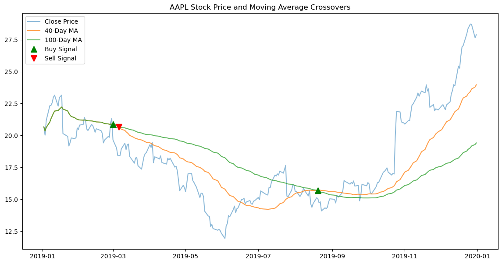
tsla['Std_Dev'] = tsla['Close'].rolling(window=short_window, min_periods=1).std()
# Calculate the z-score
tsla['Z_Score'] = (tsla['Close'] - tsla['Short_MAvg']) / tsla['Std_Dev']# Define thresholds for buying and selling
threshold_buy = -1.5 # Buy signal threshold
threshold_sell = 1.5 # Sell signal threshold
# Generate signals
tsla['Signal'] = 0
tsla['Signal'][tsla['Z_Score'] > threshold_sell] = -1 # Sell signal
tsla['Signal'][tsla['Z_Score'] < threshold_buy] = 1 # Buy signal
# Generate trading positions
tsla['Position'] = tsla['Signal'].replace(0, np.nan).ffill().fillna(0)C:\Users\james\AppData\Local\Temp\ipykernel_70572\3954209935.py:7: SettingWithCopyWarning:
A value is trying to be set on a copy of a slice from a DataFrame
See the caveats in the documentation: https://pandas.pydata.org/pandas-docs/stable/user_guide/indexing.html#returning-a-view-versus-a-copy
tsla['Signal'][tsla['Z_Score'] > threshold_sell] = -1 # Sell signal
C:\Users\james\AppData\Local\Temp\ipykernel_70572\3954209935.py:8: SettingWithCopyWarning:
A value is trying to be set on a copy of a slice from a DataFrame
See the caveats in the documentation: https://pandas.pydata.org/pandas-docs/stable/user_guide/indexing.html#returning-a-view-versus-a-copy
tsla['Signal'][tsla['Z_Score'] < threshold_buy] = 1 # Buy signal# Plot the results
plt.figure(figsize=(14,7))
plt.plot(tsla['Close'], label='Close Price', alpha=0.5)
plt.plot(tsla['Short_MAvg'], label='Moving Average', alpha=0.75)
plt.fill_between(tsla.index, tsla['Short_MAvg'] - tsla['Std_Dev'], tsla['Short_MAvg'] + tsla['Std_Dev'], color='gray', alpha=0.3, label='Standard Deviation Range')
# Highlight the buy and sell signals
plt.plot(tsla[tsla['Position'] == 1].index, tsla['Close'][tsla['Position'] == 1], '^', markersize=10, color='g', lw=0, label='Buy Signal')
plt.plot(tsla[tsla['Position'] == -1].index, tsla['Close'][tsla['Position'] == -1], 'v', markersize=10, color='r', lw=0, label='Sell Signal')
plt.title(f'{ticker} Stock Price and Mean Reversion Signals')
plt.legend()
plt.show()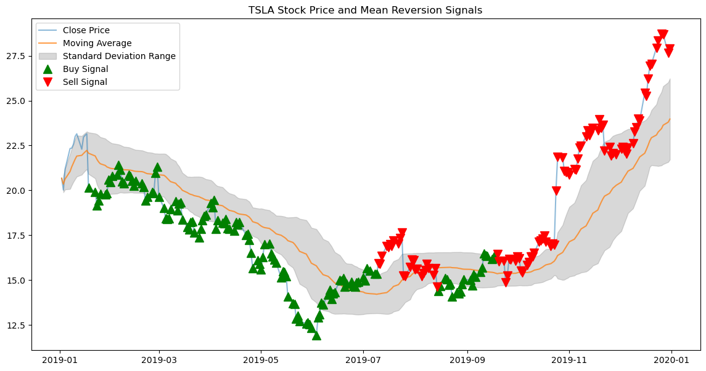
Model Analysis
from sklearn.metrics import accuracy_score
from sklearn.model_selection import train_test_split
from sklearn.ensemble import RandomForestClassifier
from sklearn.linear_model import LogisticRegression
from sklearn.svm import SVC
ticker = 'TSLA'
start_date = '2010-01-01'
end_date = '2020-01-01'
model = LogisticRegression()
data = yf.download(ticker, start=start_date, end=end_date)
# Calculate moving averages and std
data['SMA_20'] = data['Close'].rolling(window=20).mean()
data['SMA_50'] = data['Close'].rolling(window=50).mean()
data['Std_Dev'] = data['Close'].rolling(window=20).std()
# Calculate the z-score
data['Z_Score'] = (data['Close'] - data['SMA_20']) / data['Std_Dev']
# Calculate RSI
delta = data['Close'].diff()
up = delta.clip(lower=0)
down = -1 * delta.clip(upper=0)
ema_up = up.ewm(com=13, adjust=False).mean()
ema_down = down.ewm(com=13, adjust=False).mean()
rs = ema_up / ema_down
data['RSI'] = 100 - (100 / (1 + rs))
# Calculate the daily returns
data['Returns'] = data['Close'].pct_change()
# Drop any NaNs
data.dropna(inplace=True)
# If stock price goes up or down
data['Target'] = (data['Returns'].shift(-1) > 0).astype(int)
# Wanted features for X and y
features = ['SMA_20', 'SMA_50', 'Std_Dev', 'Z_Score', 'RSI', 'Returns']
X = data[features]
y = data['Target']
# Split data into first 80% and last 20%
X_train, X_test, y_train, y_test = train_test_split(X, y, test_size=0.2, random_state=42, shuffle=False)
model.fit(X_train, y_train)
y_pred = model.predict(X_test)
accuracy = accuracy_score(y_test, y_pred)
print("Accuracy:", accuracy)
# Calculate cumulative strategy returns on test data
X_test['Predicted_Signal'] = y_pred
X_test['Strategy_Returns'] = X_test['Returns'] * X_test['Predicted_Signal'].shift(1)
cumulative_strategy_returns = (X_test['Strategy_Returns'] + 1).cumprod()
# Calculate cumulative returns for the market
spy = yf.download('SPY', start=X_test.index[0].date().strftime('%Y-%m-%d'), end=end_date)
spy['Returns'] = spy['Close'].pct_change()
cumulative_market_returns = (spy['Returns'] + 1).cumprod()
plt.figure(figsize=(10,5))
plt.plot(cumulative_strategy_returns, label='Strategy Returns')
plt.plot(cumulative_market_returns, label='Market Returns')
plt.legend()
plt.show()[*********************100%%**********************] 1 of 1 completed
[*********************100%%**********************] 1 of 1 completedAccuracy: 0.4946695095948827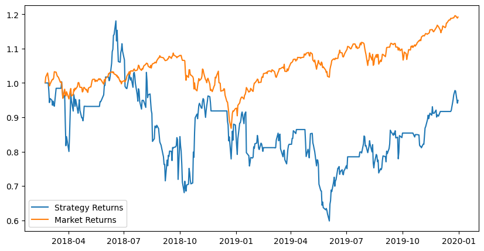
from sklearn.metrics import accuracy_score
from sklearn.model_selection import train_test_split
def train(model, ticker, start_date, end_date):
data = yf.download(ticker, start=start_date, end=end_date)
# Calculate moving averages and std
data['SMA_20'] = data['Close'].rolling(window=20).mean()
data['SMA_50'] = data['Close'].rolling(window=50).mean()
data['Std_Dev'] = data['Close'].rolling(window=20).std()
# Calculate the z-score
data['Z_Score'] = (data['Close'] - data['SMA_20']) / data['Std_Dev']
# Calculate RSI
delta = data['Close'].diff()
up = delta.clip(lower=0)
down = -1 * delta.clip(upper=0)
ema_up = up.ewm(com=13, adjust=False).mean()
ema_down = down.ewm(com=13, adjust=False).mean()
rs = ema_up / ema_down
data['RSI'] = 100 - (100 / (1 + rs))
# Calculate the daily returns
data['Returns'] = data['Close'].pct_change()
# Drop any NaNs
data.dropna(inplace=True)
# If stock price goes up or down
data['Target'] = (data['Returns'].shift(-1) > 0).astype(int)
# Wanted features for X and y
features = ['SMA_20', 'SMA_50', 'Std_Dev', 'Z_Score', 'RSI', 'Returns']
X = data[features]
y = data['Target']
# Split data into first 80% and last 20%
X_train, X_test, y_train, y_test = train_test_split(X, y, test_size=0.2, random_state=42, shuffle=False)
model.fit(X_train, y_train)
y_pred = model.predict(X_test)
accuracy = accuracy_score(y_test, y_pred)
print("Accuracy:", accuracy)
# Calculate cumulative strategy returns on test data
X_test['Predicted_Signal'] = y_pred
X_test['Strategy_Returns'] = X_test['Returns'] * X_test['Predicted_Signal'].shift(1)
cumulative_strategy_returns = (X_test['Strategy_Returns'] + 1).cumprod()
# Calculate cumulative returns for the market
spy = yf.download('SPY', start=X_test.index[0].date().strftime('%Y-%m-%d'), end=end_date)
spy['Returns'] = spy['Close'].pct_change()
cumulative_market_returns = (spy['Returns'] + 1).cumprod()
plt.figure(figsize=(10,5))
plt.plot(cumulative_strategy_returns, label='Strategy Returns')
plt.plot(cumulative_market_returns, label='Market Returns')
plt.legend()
plt.show()Code
%load_ext autoreload
%autoreload 2
from strategy import MeanReversionticker = 'TSLA'
market = 'SPY'
start = '2014-01-01'
end = '2024-01-01'
MR = MeanReversion(ticker, start, end, market)[*********************100%%**********************] 1 of 1 completed
[*********************100%%**********************] 1 of 1 completedRF = RandomForestClassifier(n_estimators=100, random_state=42)
X_test = MR.evaluate(model=RF)Accuracy: 0.5263157894736842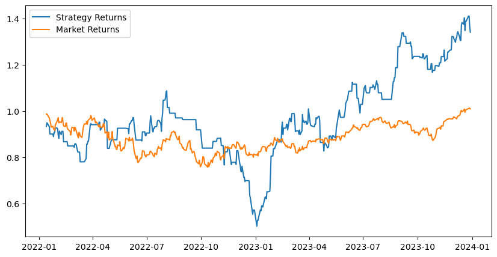
LR = LogisticRegression()
X_test = MR.evaluate(model=LR)Accuracy: 0.5041322314049587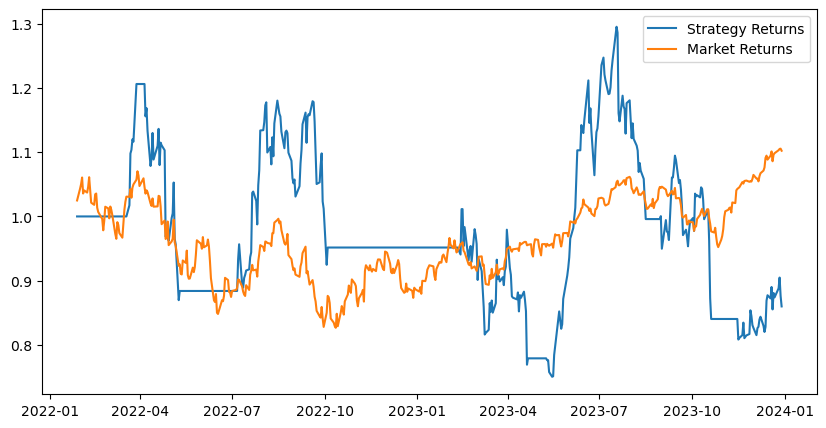
SVM = SVC()
X_test = MR.evaluate(model = SVM)Accuracy: 0.5337552742616034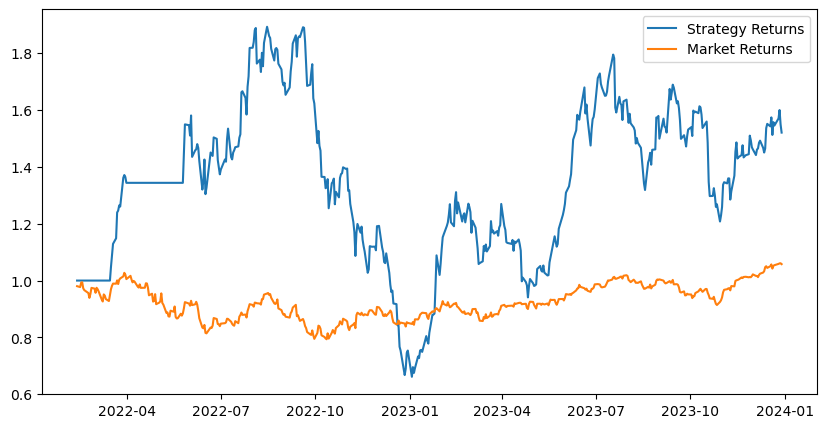
Note: Different models work better for different stocks.
Below, we calculate the “risk-free rate,” used as a reference for all returns in financial markets. It is considered the return on an investment that is considered to have zero risk (short-term US treasuries). We use the risk-free rate to calculate the Sharpe ratio, which is a widely-used measure of an investment or a strategy’s “risk-adjusted” performance.
def deannualize(annual_rate, periods=365):
return (1 + annual_rate) ** (1/periods) - 1
def get_risk_free_rate(start_date, end_date):
# download 3-month us treasury bills rates
annualized = yf.download('^IRX', start_date, end_date)['Close']
annualized = annualized / 100
# de-annualize
daily = annualized.apply(deannualize)
# create dataframe
return pd.DataFrame({"annualized": annualized, "daily": daily})Pytrends
from pytrends.request import TrendReq
from pytrends import dailydatapytrends = TrendReq(hl = 'en-US', tz=360)pytrends.build_payload(kw_list=['Microsoft', 'Tesla', 'Apple'], timeframe='2010-01-01 2020-01-01')Basket Analysis
tickers = ['XOM', 'CVX', 'COP', 'NEE', 'SO', 'EOG', 'DUK', 'MPC', 'SLB', 'PSX']
def prepare_data(tickers, start_date, end_date):
'''
Combines data of all tickers into a single dataframe for X_train. X_test is a list of dataframes for each ticker.
'''
X_train_list = []
y_train_list = []
X_test_list = []
y_test_list = []
for t in tickers:
data = yf.download(t, start=start_date, end=end_date)
# Calculate moving averages and std
data['SMA_20'] = data['Close'].rolling(window=20).mean()
data['SMA_50'] = data['Close'].rolling(window=50).mean()
data['Std_Dev'] = data['Close'].rolling(window=20).std()
# Calculate the z-score
data['Z_Score'] = (data['Close'] - data['SMA_20']) / data['Std_Dev']
# Calculate RSI
delta = data['Close'].diff()
up = delta.clip(lower=0)
down = -1 * delta.clip(upper=0)
ema_up = up.ewm(com=13, adjust=False).mean()
ema_down = down.ewm(com=13, adjust=False).mean()
rs = ema_up / ema_down
data['RSI'] = 100 - (100 / (1 + rs))
# Calculate the daily returns
data['Returns'] = data['Close'].pct_change()
# Drop any NaNs
data.dropna(inplace=True)
# If stock price goes up or down
data['Target'] = (data['Returns'].shift(-1) > 0).astype(int)
data['Ticker'] = t
features = ['Ticker', 'SMA_20', 'SMA_50', 'Std_Dev', 'Z_Score', 'RSI', 'Returns']
X = data[features]
y = data['Target']
X_train, X_test, y_train, y_test = train_test_split(X, y, test_size=0.2, random_state=42, shuffle=False)
X_train_list.append(X_train)
y_train_list.append(y_train)
X_test_list.append(X_test)
y_test_list.append(y_test)
return pd.concat(X_train_list, ignore_index=True), pd.concat(y_train_list, ignore_index=True), X_test_list, y_test_listdef evaluate(model, X_test_, y_test_, features, market_data):
'''
Compares returns to the market for a single ticker.
'''
X_test = X_test_.copy()
y_test = y_test_.copy()
y_pred = model.predict(X_test[features])
accuracy = accuracy_score(y_test, y_pred)
print(f"{X_test.Ticker.iloc[0]} Accuracy:", accuracy)
# Calculate cumulative strategy returns on test data
X_test['Predicted_Signal'] = y_pred
X_test['Strategy_Returns'] = X_test['Returns'] * X_test['Predicted_Signal'].shift(1)
cumulative_strategy_returns = (X_test['Strategy_Returns'].fillna(0) + 1).cumprod()
returns = X_test.loc[X_test.index, 'Returns']
returns.iloc[0] = 0
cumulative_stock_returns = (returns + 1).cumprod()
# Calculate cumulative returns for the market
market_data['Returns'] = market_data['Close'].pct_change()
#cumulative_market_returns = (market_data['Returns'].fillna(0) + 1).cumprod()
plt.figure(figsize=(10,5))
plt.plot(cumulative_strategy_returns, label='Strategy Returns', alpha=0.5)
#plt.plot(cumulative_market_returns, label='Market Returns')
plt.plot(cumulative_stock_returns, label='Stock Returns', alpha=0.5)
plt.title(f'{X_test.Ticker.iloc[0]} Returns')
plt.legend()
plt.show()
return X_teststart = '2014-01-01'
end = '2024-01-01'
X_train, y_train, X_test, y_test = prepare_data(tickers, start, end)[*********************100%%**********************] 1 of 1 completed
[*********************100%%**********************] 1 of 1 completed
[*********************100%%**********************] 1 of 1 completed
[*********************100%%**********************] 1 of 1 completed
[*********************100%%**********************] 1 of 1 completed
[*********************100%%**********************] 1 of 1 completed
[*********************100%%**********************] 1 of 1 completed
[*********************100%%**********************] 1 of 1 completed
[*********************100%%**********************] 1 of 1 completed
[*********************100%%**********************] 1 of 1 completedfrom sklearn.svm import LinearSVC
#model = RandomForestClassifier(n_estimators=100, random_state=42)
model = SVC()
#model = LogisticRegression()
features = ['SMA_20', 'SMA_50', 'Std_Dev', 'Z_Score', 'RSI', 'Returns']
model = model.fit(X_train[features], y_train)
market_data = yf.download('SPY', start=start, end=end)
X_test_vec = []
for i in range(10):
market = market_data[market_data.index >= X_test[i].index[0]].copy()
X_test_vec.append(evaluate(model, X_test[i], y_test[i], features, market_data=market))[*********************100%%**********************] 1 of 1 completedXOM Accuracy: 0.52834008097166
CVX Accuracy: 0.48380566801619435
COP Accuracy: 0.5323886639676113
NEE Accuracy: 0.48380566801619435
SO Accuracy: 0.4939271255060729
EOG Accuracy: 0.5425101214574899
DUK Accuracy: 0.5182186234817814
MPC Accuracy: 0.5303643724696356
SLB Accuracy: 0.520242914979757
PSX Accuracy: 0.5161943319838057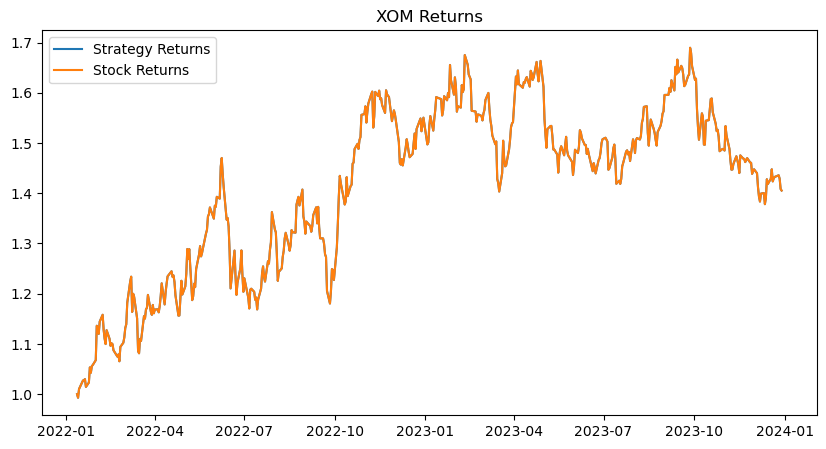
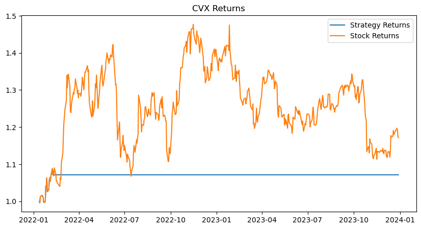
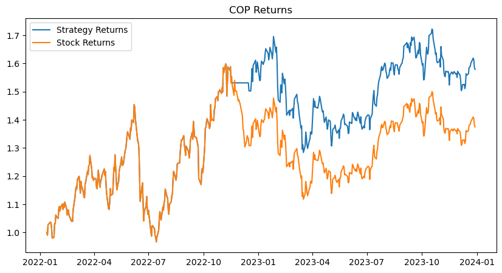
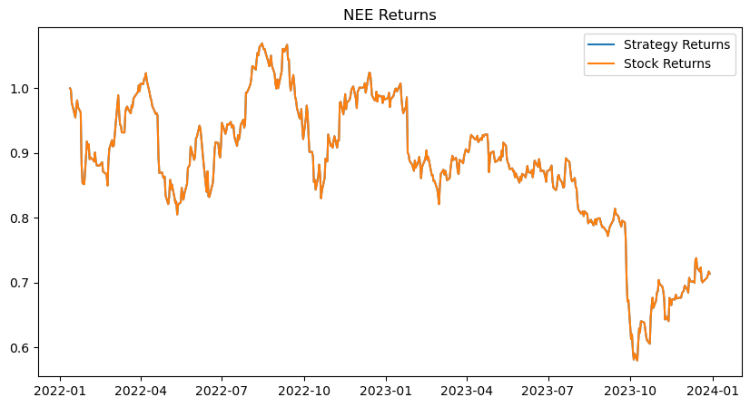
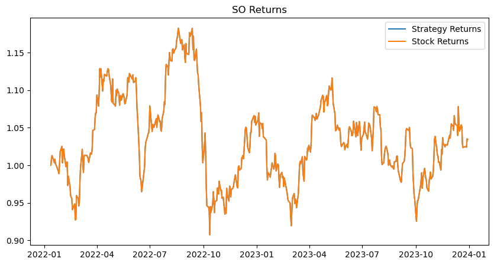
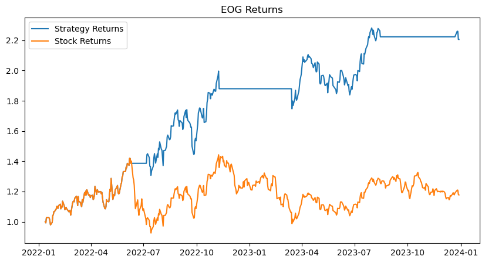
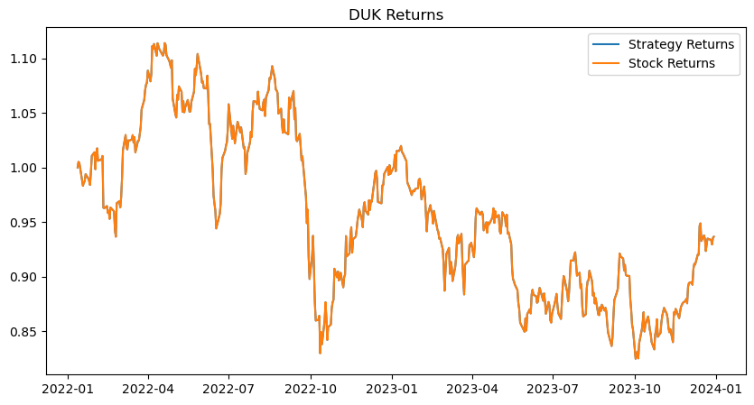
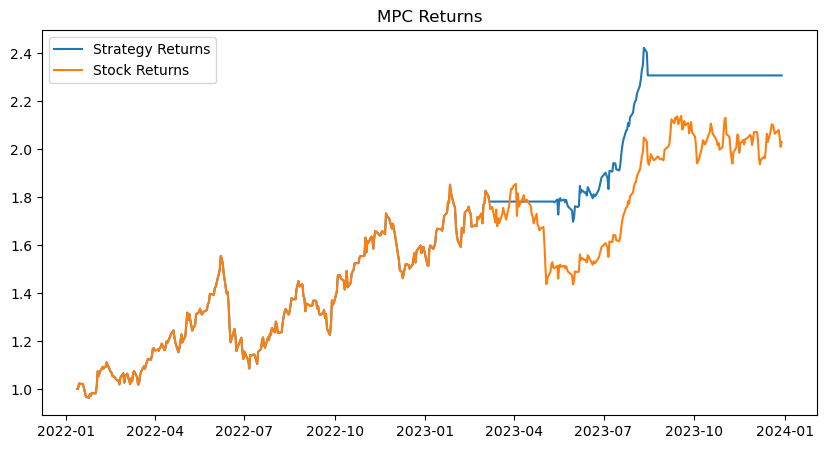
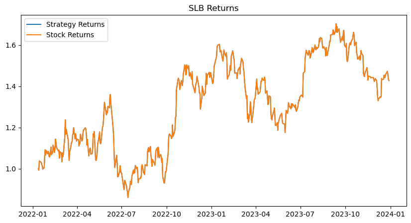
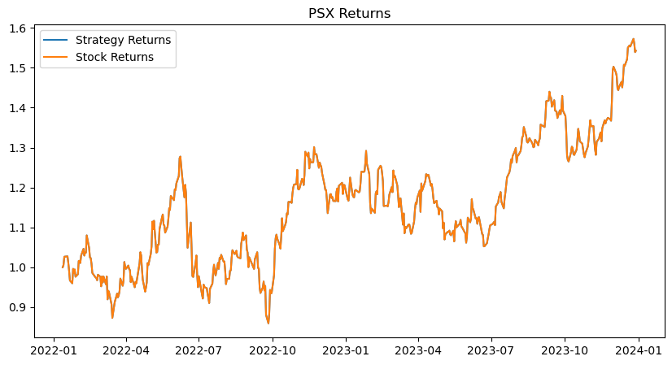
X_test_vec[0]['Predicted_Signal'].mean()0.5040485829959515Feature Selection
RFE
from sklearn.feature_selection import RFECV
from sklearn.svm import LinearSVC
features = ['SMA_20', 'SMA_50', 'Std_Dev', 'Z_Score', 'RSI']
rfe = RFECV(LinearSVC(dual='auto'), cv = 5)rfe = rfe.fit(X_train[features], y_train)rfe.ranking_array([2, 3, 1, 1, 4])market_data = yf.download('SPY', start=start, end=end)
market = market_data[market_data.index >= X_test[i].index[0]].copy()
X_test_vec = []
for i in range(10):
X_test_vec.append(evaluate(rfe, X_test[i], y_test[i], features, market_data=market))[*********************100%%**********************] 1 of 1 completedXOM Accuracy: 0.5182186234817814
CVX Accuracy: 0.46963562753036436
COP Accuracy: 0.5222672064777328
NEE Accuracy: 0.4898785425101215
SO Accuracy: 0.4939271255060729
EOG Accuracy: 0.46963562753036436
DUK Accuracy: 0.5141700404858299
MPC Accuracy: 0.5323886639676113
SLB Accuracy: 0.5242914979757085
PSX Accuracy: 0.5323886639676113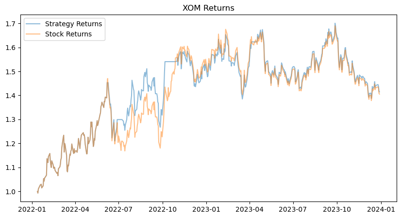
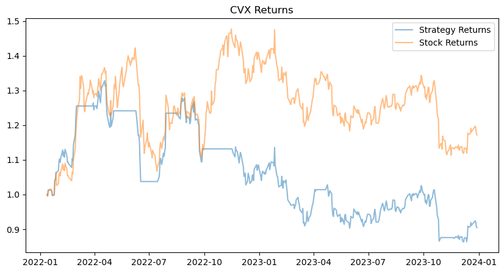
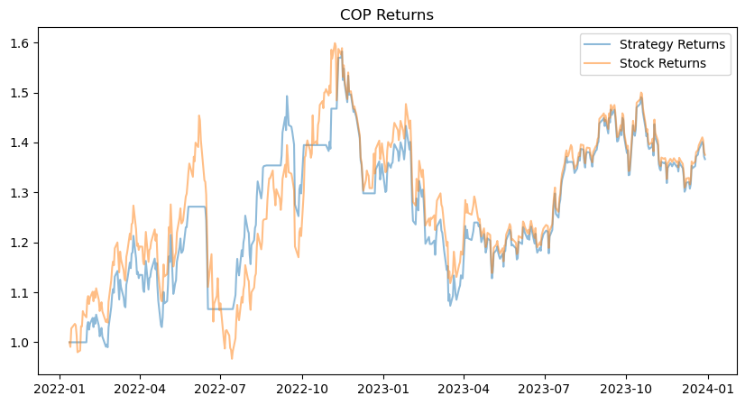
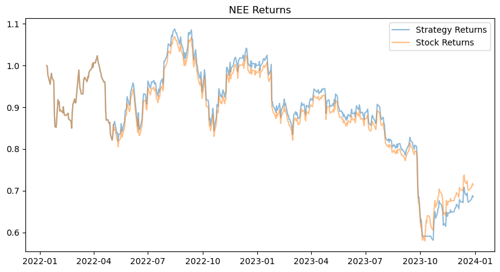
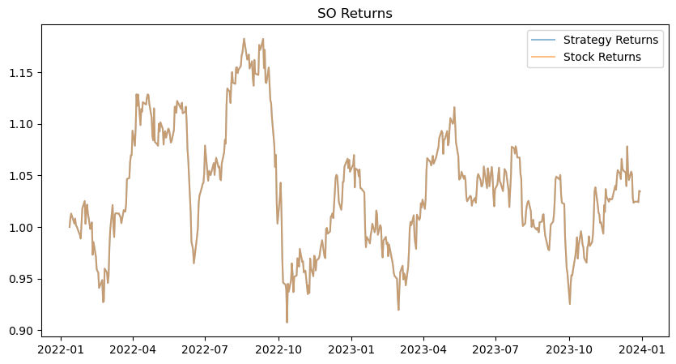
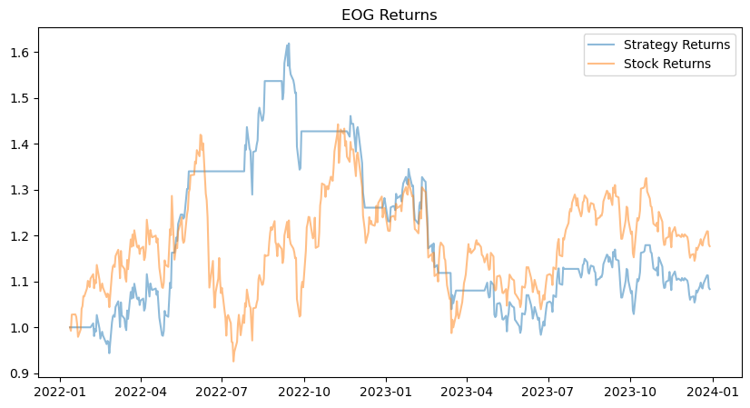
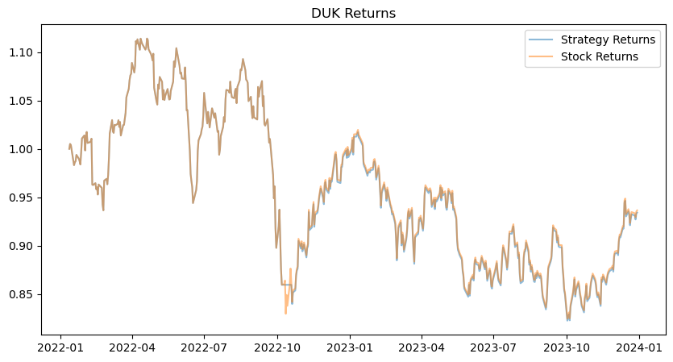
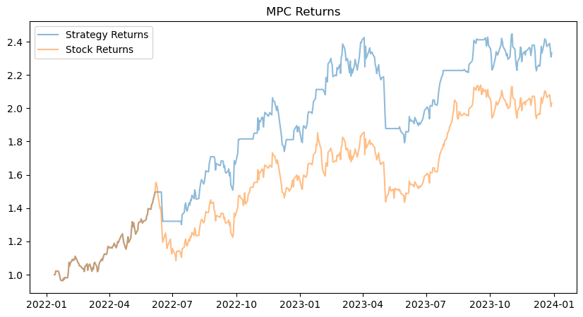
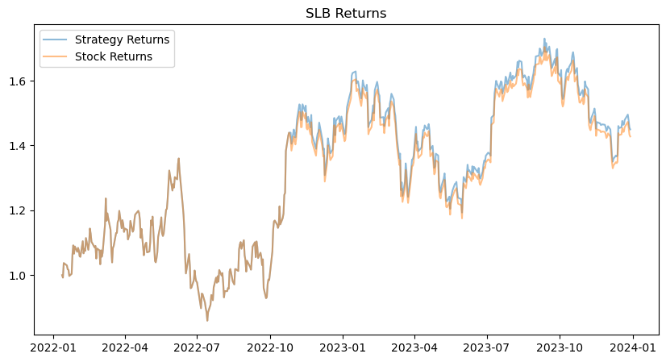
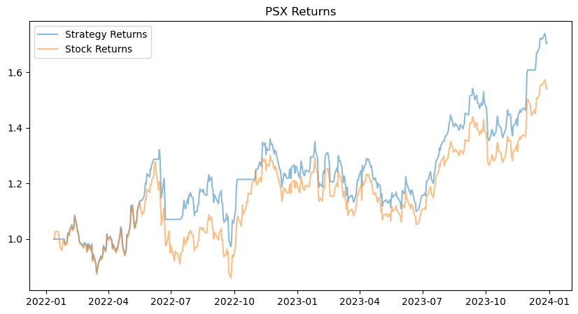
LSTM
import torch
import torch.nn as nn
import torch.optim as optim
import torch.utils.data as data
from torch.autograd import Variable %load_ext autoreload
%autoreload 2
from lstm_model import LSTMModelThe autoreload extension is already loaded. To reload it, use:
%reload_ext autoreloadticker = 'XOM'
start_date = '2014-01-01'
end_date = '2024-01-01'
#model = LogisticRegression()
data = yf.download(ticker, start=start_date, end=end_date)
# Calculate moving averages and std
data['SMA_20'] = data['Close'].rolling(window=20).mean()
data['SMA_50'] = data['Close'].rolling(window=50).mean()
data['Std_Dev'] = data['Close'].rolling(window=20).std()
# Calculate the z-score
data['Z_Score'] = (data['Close'] - data['SMA_20']) / data['Std_Dev']
# Calculate RSI
delta = data['Close'].diff()
up = delta.clip(lower=0)
down = -1 * delta.clip(upper=0)
ema_up = up.ewm(com=13, adjust=False).mean()
ema_down = down.ewm(com=13, adjust=False).mean()
rs = ema_up / ema_down
data['RSI'] = 100 - (100 / (1 + rs))
# Calculate the daily returns
data['Returns'] = data['Close'].pct_change()
# If stock price goes up or down
data['Target'] = data['Close'].shift(-1)
data.dropna(inplace=True)
# Wanted features for X and y
features = ['SMA_20', 'SMA_50', 'Std_Dev', 'Z_Score', 'RSI', 'Close', 'Returns']
X = data.loc[:, features]
y = data.iloc[:, (data.shape[1]-1):(data.shape[1])]
from sklearn.preprocessing import StandardScaler, MinMaxScaler
mm1 = MinMaxScaler()
ss1 = StandardScaler()
# mm2 = MinMaxScaler()
# ss2 = StandardScaler()
X_ss = pd.DataFrame(ss1.fit_transform(X), index=X.index, columns=X.columns)
y_mm = pd.DataFrame(mm1.fit_transform(y), index=y.index, columns=y.columns)
# Split data into first 80% and last 20%
X_train, X_test, y_train, y_test = train_test_split(X_ss, y_mm, test_size=0.2, random_state=42, shuffle=False)
# X_train_ss = pd.DataFrame(ss1.fit_transform(X_train), index=X_train.index, columns=X.columns)
# y_train_mm = pd.DataFrame(mm1.fit_transform(y_train), index=y_train.index, columns=y.columns)
# X_test_ss = pd.DataFrame(ss2.fit_transform(X_test), index=X_test.index, columns=X.columns)
# y_test_mm = pd.DataFrame(mm2.fit_transform(y_test), index=y_test.index, columns=y.columns)[*********************100%%**********************] 1 of 1 completedfeatures_ = ['SMA_20', 'SMA_50', 'Std_Dev', 'Z_Score', 'RSI']
X_train_tensors = Variable(torch.Tensor(np.array(X_train[features_])))
X_test_tensors = Variable(torch.Tensor(np.array(X_test[features_])))
y_train_tensors = Variable(torch.Tensor(y_train.values))
y_test_tensors = Variable(torch.Tensor(y_test.values))
X_train_final = torch.reshape(X_train_tensors, (X_train_tensors.shape[0], 1, X_train_tensors.shape[1]))
X_test_final = torch.reshape(X_test_tensors, (X_test_tensors.shape[0], 1, X_test_tensors.shape[1]))print("Training Shape", X_train_final.shape, y_train_tensors.shape)
print("Testing Shape", X_test_final.shape, y_test_tensors.shape) Training Shape torch.Size([1972, 1, 5]) torch.Size([1972, 1])
Testing Shape torch.Size([494, 1, 5]) torch.Size([494, 1])num_epochs = 1000 #1000 epochs
learning_rate = 0.001 #0.001 lr
input_size = 5 #number of features
hidden_size = 2 #number of features in hidden state
num_layers = 1 #number of stacked lstm layers
num_classes = 1 #number of output classes lstm = LSTMModel(num_classes, input_size, hidden_size, num_layers, X_train_final.shape[1]) #our lstm class criterion = torch.nn.MSELoss() # mean-squared error for regression
optimizer = torch.optim.Adam(lstm.parameters(), lr=learning_rate)for epoch in range(num_epochs):
outputs = lstm.forward(X_train_final) #forward pass
optimizer.zero_grad() #calculate the gradient, manually setting to 0
# obtain the loss function
loss = criterion(outputs, y_train_tensors)
loss.backward() #calculates the loss of the loss function
optimizer.step() #improve from loss, i.e backprop
if epoch % 100 == 0:
print("Epoch: %d, loss: %1.5f" % (epoch, loss.item())) Epoch: 0, loss: 0.16941
Epoch: 100, loss: 0.01794
Epoch: 200, loss: 0.00689
Epoch: 300, loss: 0.00291
Epoch: 400, loss: 0.00080
Epoch: 500, loss: 0.00038
Epoch: 600, loss: 0.00029
Epoch: 700, loss: 0.00026
Epoch: 800, loss: 0.00023
Epoch: 900, loss: 0.00022train_predict = lstm(X_train_final)
data_predict = train_predict.data.numpy()data_predict = mm1.inverse_transform(data_predict) #reverse transformationX_train = pd.DataFrame(ss1.inverse_transform(X_train), index=X_train.index, columns=features)X_train['Predicted_Price'] = data_predict
X_train['Actual_Signal'] = (X_train['Returns'].shift(-1) > 0).astype(int)
X_train['Predicted_Returns'] = X_train['Predicted_Price'].pct_change()
X_train['Predicted_Signal'] = (X_train['Predicted_Returns'].shift(-1) > 0).astype(int)
X_train['Strategy_Returns'] = X_train['Returns'] * X_train['Predicted_Signal'].shift(1)
cumulative_strategy_returns = (X_train['Strategy_Returns'].fillna(0) + 1).cumprod()
returns = X_train.loc[X_train.index, 'Returns']
returns.iloc[0] = 0
cumulative_stock_returns = (returns + 1).cumprod()
accuracy = (X_train['Actual_Signal'] == X_train['Predicted_Signal']).mean()
print(f'Accuracy: {accuracy}')
# Calculate cumulative returns for the market
#market_data['Returns'] = market_data['Close'].pct_change()
#cumulative_market_returns = (market_data['Returns'].fillna(0) + 1).cumprod()
plt.figure(figsize=(10,5))
plt.plot(cumulative_strategy_returns, label='Strategy Returns', alpha=0.5)
#plt.plot(cumulative_market_returns, label='Market Returns')
plt.plot(cumulative_stock_returns, label='Stock Returns', alpha=0.5)
plt.legend();Accuracy: 0.9523326572008114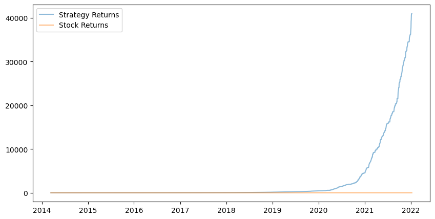
plt.figure(figsize=(10,5))
plt.plot(X_train['Predicted_Price'], label='Predicted Price')
plt.plot(X_train['Close'], label='Actual Price')
plt.legend();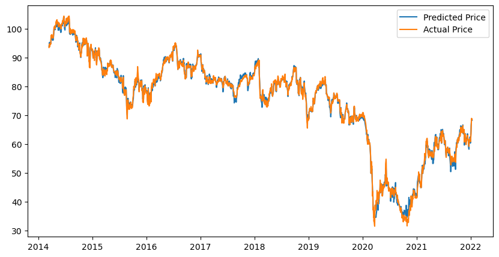
test_predict = lstm(X_test_final)
data_predict = test_predict.data.numpy()data_predict = mm1.inverse_transform(data_predict)
X_test = pd.DataFrame(ss1.inverse_transform(X_test), index=X_test.index, columns=features)X_test['Actual_Signal'] = (X_test['Returns'].shift(-1) > 0).astype(int)
X_test['Predicted_Price'] = data_predict
X_test['Predicted_Returns'] = X_test['Predicted_Price'].pct_change()
X_test['Predicted_Signal'] = (X_test['Predicted_Returns'].shift(-1) > 0).astype(int)
X_test['Strategy_Returns'] = X_test['Returns'] * X_test['Predicted_Signal'].shift(1)
cumulative_strategy_returns = (X_test['Strategy_Returns'].fillna(0) + 1).cumprod()
returns = X_test.loc[X_test.index, 'Returns']
returns.iloc[0] = 0
cumulative_stock_returns = (returns + 1).cumprod()
accuracy = (X_test['Actual_Signal'] == X_test['Predicted_Signal']).mean()
print(f'Accuracy: {accuracy}')
# Calculate cumulative returns for the market
#market_data['Returns'] = market_data['Close'].pct_change()
#cumulative_market_returns = (market_data['Returns'].fillna(0) + 1).cumprod()
plt.figure(figsize=(10,5))
plt.plot(cumulative_strategy_returns, label='Strategy Returns')
#plt.plot(cumulative_market_returns, label='Market Returns')
plt.plot(cumulative_stock_returns, label='Stock Returns')
plt.legend();Accuracy: 0.9473684210526315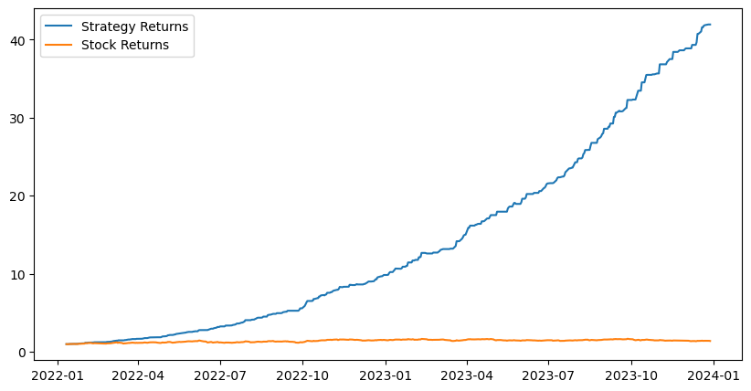
plt.figure(figsize=(10,5))
plt.plot(X_test['Predicted_Price'], label='Predicted Price')
plt.plot(X_test['Close'], label='Actual Price')
plt.legend();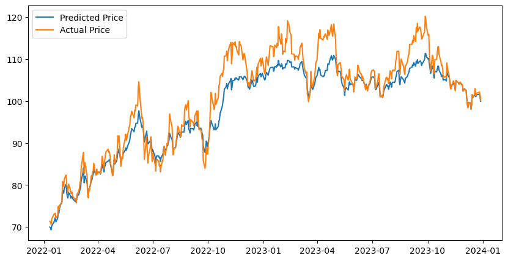